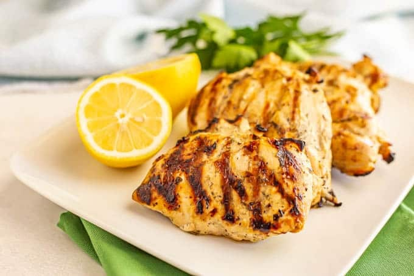

Lemon Grilled Chicken

This lemon grilled chicken recipe is a guaranteed to make you rethink how you've been making your chicken.
Using basic ingredients turn the regular bland chicken you might know into a juicy, flavorful, meal.
Easy prep, delicious flavor, and easily paired with rice and vegetables you can't go wrong with this meal.
Ingredients
- 1 1/2 lbs. boneless, skinless chicken breasts
- 1/3 cup extra-virgin olive oil
- 1/3 cup fresh squeezed lemon juice (from about 3 lemons)
- 2 cloves garlic, minced
- 1 1/2 teaspoons kosher salt
- 3/4 teaspoon black pepper
- 1 tablespoon chopped fresh thyme OR parsley
Instructions
- Place the chicken breasts into a large ziploc bag or a large bowl.
- In a small bowl, whisk together the olive oil, lemon juice, garlic, salt, pepper and fresh herbs until well combined. Pour the marinade mixture into the bag with the chicken. Seal the bag and turn to get the chicken breasts well coated.
- Refrigerate the chicken and let marinate for 4-6 hours, turning occasionally.
- Remove the chicken from the refrigerator then preheat the grill to medium high.
- Remove the chicken from the bag and discard the marinade.
- Grill the chicken breasts for 7-8 minutes then flip and grill for another 4-5 minutes, until cooked through.
- Serve and enjoy!
Next Recipe: Chicken Parmesan
Return to Home Page